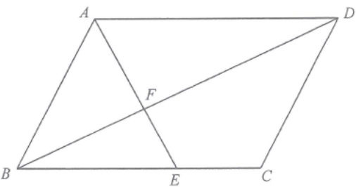

求積法 · 三角形與四邊形的面積

$\triangle EBF\sim\triangle ADF$（AAA），且 $AD=BC$，故
$$\frac{BF}{FD}=\frac{BE}{AD}=\frac{BE}{BC}=\frac{5}{5+3}=\frac{5}{8}$$
$\triangle ABD$ 中，$F$ 在 $BD$ 上，故
$$\frac{\triangle ABF}{\triangle ABD}=\frac{BF}{BD}=\frac{5}{13}$$
而 $\triangle ABD=\dfrac{1}{2}\times$ 平行四邊形面積 $S$，所以
$$120=\frac{5}{13}\times\frac{S}{2}\;\Rightarrow\;S=624$$
$\triangle ABE$：底 $BE=\dfrac{5}{8}BC$，高與平行四邊形相同，故
$$\triangle ABE=\frac{5}{8}\times\frac{S}{2}=195$$
$\triangle ADF$ 與 $\triangle ABF$ 同高（底都在 $BD$ 上），故 $\triangle ADF=\dfrac{8}{5}\triangle ABF=\dfrac{8}{5}\times120=192$。
$$CDFE=S-\triangle ABE-\triangle ADF=624-195-192=237\text{ cm}^{2}$$